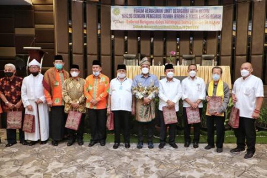

Peranan Pemerintah dalam Membina Kehidupan Beragama
Negara hadir untuk menjamin, melindungi, dan membina kerukunan umat beragama
✍️Dasar Negara dan Konstitusi
Dasar Negara Republik Indonesia adalah Pancasila. Sila pertama berbunyi "Ketuhanan Yang Maha Esa". Undang-Undang Dasar Negara Republik Indonesia ialah UUD 1945. Dalam UUD 1945 pada Bab 11 diatur tentang agama.
Pengaturan lebih rinci tersurat dalam Pasal 29 ayat (1) dan (2) UUD 1945. Sesungguhnya makna Bab 11 ini adalah sebagai uraian dasar dari sila pertama Pancasila yang berbunyi "Ketuhanan Yang Maha Esa".
🕊️Agama dan Aliran Kepercayaan
Masalah Ketuhanan ini erat kaitannya dengan agama. Tidak semua hal yang perilakunya berkaitan dengan Ketuhanan itu dapat disebut agama. Di Indonesia ada yang perilakunya berhubungan dengan Ketuhanan, tidak disebut agama. Mereka memberi nama dirinya penganut penghayatan terhadap Ketuhanan Yang Maha Esa. Di masyarakat lebih dikenal dengan sebutan aliran kepercayaan.
Aliran kepercayaan itu jumlahnya banyak sekali di Indonesia. Begitu pula aliran kepercayaan ini disebut dengan banyak nama pula. Sudah jelas dengan adanya banyak agama yang diakui di Indonesia dan juga banyak macam penganut kepercayaan terhadap Tuhan Yang Maha Esa, maka sudah barang tentu untuk mendayagunakan semua umatnya pemerintah mempunyai peranan penting untuk membina kehidupan beragama.
⚖️Kewajiban Pemerintah dalam Membina Kehidupan Beragama
Berdasarkan penjelasan UUD 1945 tentang sila Ketuhanan Yang Maha Esa dan Pasal 29 UUD 1945, maka pemerintah dan aparatur negara lainnya mempunyai kewajiban dalam membina, mengembangkan kehidupan beragama di Indonesia sebagai berikut:
a. Menjamin kebebasan tiap penduduk untuk memeluk agamanya masing-masing dan untuk beribadat menurut agama dan kepercayaannya itu.
b. Menjamin, melindungi, membina, mengembangkan serta memberikan bimbingan dan pengarahan agar kehidupan beragama tampak rukun, dan bergairah, tumbuh dengan suburnya, serasi dengan kebijakan pemerintah dalam membina kehidupan berbangsa dan bernegara berdasarkan Pancasila.
c. Negara tidak mengatur dan mencampuri urusan norma agama atau ajaran agama maupun ibadahnya secara khusus. Hal itu adalah hak setiap orang menurut keyakinannya masing-masing, maka dari itu negara menjamin sepenuhnya akan kehidupan beragama itu.
🤝Peran Aktif Pemerintah dan Umat Beragama

🌿Makna Kebebasan Beragama di Indonesia
Kebebasan beragama di Indonesia bukan berarti kebebasan tanpa batas. Negara hadir sebagai fasilitator yang memastikan setiap pemeluk agama dan penganut kepercayaan dapat menjalankan keyakinannya dengan tertib, saling menghormati, dan tidak mengganggu ketertiban umum.
Peran pemerintah sangat penting dalam menjaga keseimbangan antara hak individu untuk beribadah dan kewajiban kolektif untuk menjaga kerukunan. Melalui berbagai kebijakan dan program pembinaan, pemerintah terus berupaya menciptakan lingkungan yang kondusif bagi perkembangan kehidupan beragama di Indonesia.
🕉️Jejak Organisasi Hindu Nusantara
PHDI (Parisada Hindu Dharma Indonesia)
PHDI adalah organisasi payung umat Hindu di Indonesia yang lahir pada tahun 1959. Organisasi ini berperan penting dalam memperjuangkan pengakuan Hindu sebagai agama resmi negara. PHDI juga berhasil mengonsolidasikan berbagai tradisi dan menjadikan kitab suci Weda sebagai rujukan utama bagi umat Hindu di Indonesia.
Mpu Kuturan dan Tradisi Desa Pakraman
Mpu Kuturan adalah tokoh spiritual yang meletakkan dasar-dasar keagamaan Hindu di Bali. Salah satu warisannya yang masih lestari adalah sistem Desa Pakraman — lembaga spiritual yang menjaga harmoni melalui konsep Tri Hita Karana. Selain itu, organisasi akar rumput seperti Sekaa dan Banjar juga menjadi fondasi sosial keagamaan yang kuat di masyarakat Bali.
Organisasi Kerohanian Modern
Di era modern, berbagai organisasi kerohanian seperti Brahma Kumaris cabang Bali dan Sri Sathya Sai Seva turut melestarikan nilai-nilai moral dan meditasi. Organisasi-organisasi ini berperan dalam mendukung kerukunan nasional melalui kegiatan spiritual yang inklusif dan damai.
"Dari masa kerajaan hingga era reformasi, organisasi Hindu di Indonesia terus menjadi perekat spiritual sekaligus pelopor toleransi."
📺 Video Pembelajaran


Klik pada gambar untuk menonton video pembelajaran di YouTube
📊 Infografis Inspiratif
Pasal 29 UUD 1945
Negara berdasarkan Ketuhanan Yang Maha Esa
Negara menjamin kemerdekaan beragama
Peran Pemerintah
Menjamin, melindungi, membina, mengembangkan kehidupan beragama
Kerukunan Umat
Umat beragama ikut aktif mewujudkan tujuan pembangunan nasional